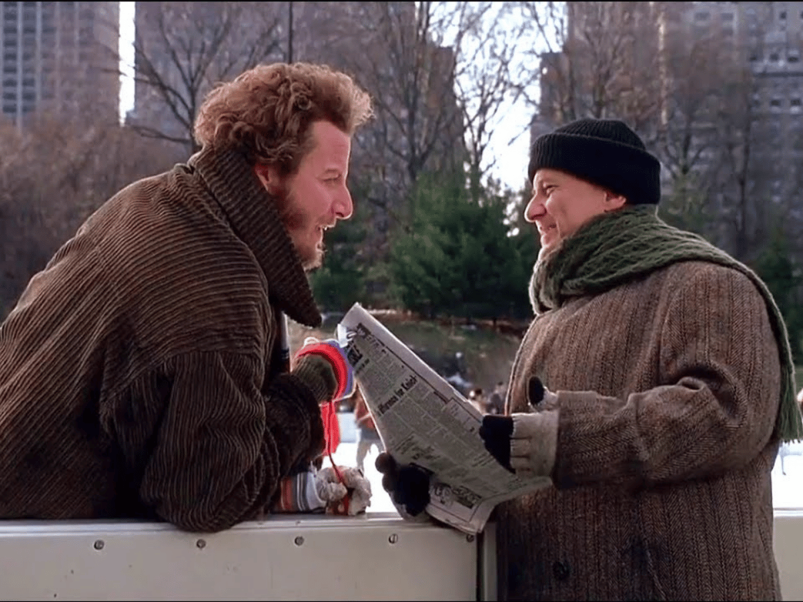
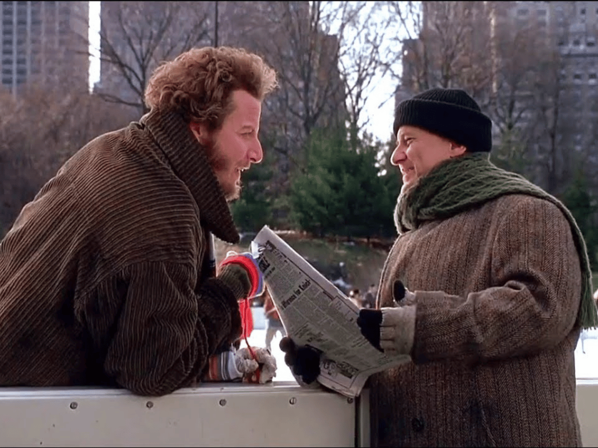

Genul filmului:
Comedie
Data lansarii:
15 noiembrie 1992
Durata filmului:
120 de minute
Regizorul filmului:
Chris Columbus
Actori principali:
- Macaulay Culkin
- Daniel Stern
- Joe Pesci
Premii:
- People's Choice Award - pentru filmul de comedie preferat
Prezentare:
Familia McCallister se pregătește de plecare în Florida pentru a petrece Crăciunul acolo.
Începe iar agitația în rândul mulțimii de frați, surori, veri, părinți și mătuși.
Doar Kevin rămâne calm, chiar și după ce se urcă în alt avion, cel care merge la New York.
Mai ales că din greșeală toate cărțile de credit au rămas în posesia lui.
De aceea Kevin se cazează la Plaza Hotel. Aici își satisface toate fanteziile culinare,
trebuind tot timpul să-i păcălească pe angajații vigilenți ai hotelului.
Ieșit la o plimbare prin oraș, Kevin se întâlnește cu cei doi hoți din primul film,
Harry și Marv.
Cei doi tocmai au descins dintr-un camion plin cu pește și sunt dornici să se
răzbune pe Kevin.
Băiatul, în lipsa părinților, se împrietenește cu doamna cu porumbeii,
o femeie ce-și deschide inima în fața lui după ani de zile în care
nu a mai comunicat cu nimeni.
Cei doi hoți au iarăși multe de pătimit din partea lui Kevin.
În cele din urmă, Kevin se întâlnește cu mama sa în fața pomului de Crăciun.
Distributia filmului:
- Macaulay Culkin
- Daniel Stern
- Joe Pesci
- John Heard
- Devin Ratray
- Tim Curry
- Catherine O'Hara
- Rob Schneider
- Kieran Culkin
- Dana Ivey
- Eddie Bracken
- Fred Krause
- Donald Trump
Cateva imagini din film:
 



Videos:
A kid vs. two idiots!Merry Christmas...
Reviews:
"Home Alone 2 has pretty much the same plot as the first movie,
but Home Alone 2 is a very good sequel.
The new traps for the Wet, er... Sticky Bandits are great.
Once again Joe Pesci and Daniel Stern give wonderful performances.
Having Tim Curry in this was also a treat. There is a lot of enjoyment in
this movie."
"Macaulay Culkin is so wonderful throughout constantly endearing and sweet
at times! Many legendary quotes that never cease to get old.
Crazy I was born the year Home Alone 2: Lost in New York came out.
Chris Columbus has made so many gems or been part of so many lovely films;
so heartwarming!"
"This movie came out when I was 14. I love it so much,
I have watched a million times in my life, and will never stop loving it!
Its even better than the first, without a doubt my favorite Christmas
move in the world. The cast are amazing, giving us more of what we
loved in the first, and its full of heart as well as being funny.
Love it always!"